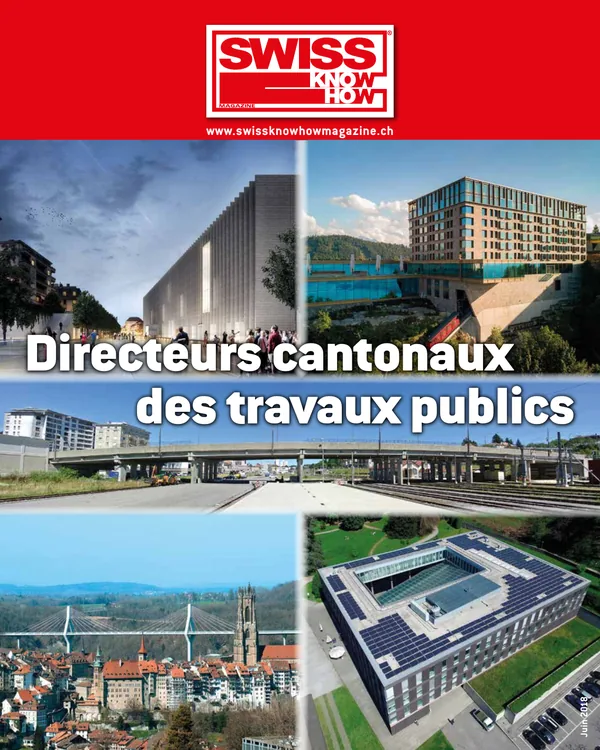

Texte intégral
Créé en 2004 et présent dans 5 cantons de la Suisse Romande, BA ConsultinG est spécialisé dans les installations sanitaires et apparentées, les gaz médicaux, les installations sprinkler, le vacuum commercial, le chauffage et la ventilation. Grâce à ses 7 collaborateurs et son apprenti la société gère 50 projets d’ouvrages simultanément pour un coût d’installation allant de SFr. 10’000 à 6’200’000. Nous sommes certifiés ISO 9001, 14001 et OHSAS 18001 depuis bientôt 10 ans.
BA ConsultinG dispose de hautes compétences dans le domaine des installations sanitaires et apparentées grâce à ses trois techniciens diplômés des écoles supérieures et ses collaborateurs techniques au bénéfice de CFC. La société suit régulièrement les évolutions de la technique par des cours de formation interne et externe et s’intéresse à tous les domaines et événements liés à l’énergie : lois et ordonnances, associations professionnelles, fabricants et fournisseurs… Elle se fait un point d’honneur à appliquer systématiquement les évolutions techniques pour garantir des installations rationnelles et sécures, en parfaite adéquation avec la politique énergétique de la confédération et de ses différents intervenants.
Les prestations de BA ConsultinG correspondent aux prestations décrites dans la norme SIA 108. Depuis la définition des objectifs et des études préliminaires et de faisabilité, la société est à même d’établir les dossiers d’avant-projet et de projet avec leurs conventions d’utilisation, puis la phase de procédure de demande d’autorisation accompagnée du dossier de mise à l’enquête avec bilan énergétique et formulaires ad hoc. En outre, BA ConsultinG s’engage à produire un cahier des charges sous forme de série de prix en vue d’une adjudication des travaux aux métrés contradictoires ou au forfait/global.
Viennent ensuite la réalisation, composée du dossier d’exécution et du suivi de chantier avec les revues de projet relatives aux travaux d’exécution, la mise en service et la réception des installations avec dossier de contrôle du dossier de révision. La société développe également une cellule BIM pour répondre aux demandes actuelles du marché. Elle est enfin compétente pour suivre l’exploitation des installations et en analyser les valeurs de consommations (énergie, eau, etc.) afin d’orienter le client vers une meilleure efficacité, voire une efficience des installations.
Les références de BA ConsultinG parlent d’elles-mêmes. Le Centre Commercial Métropole 2000 Lausanne (installations sanitaires, installations sprinkler,), la centrale de gaz médicaux de secours et les travaux préparatoires pour blocs opératoires préfabriqués au CHUV (installations sanitaires, installations de gaz médicaux), l’EMS de Beausobre à Morges (installations sanitaires, agencement d’offices sales et baignoire thérapeutique), le Centre Commercial Migros 1032 de Romanel-sur-Lausanne (installations sanitaires, installations sprinkler, installation de vacuum commercial), la PPE Es Brits, un quartier d’habitation Minergie à Etagnières (installations sanitaires), l’EMS Le Marronnier à Lutry (installations sanitaires, agencement d’offices sales et baignoire thérapeutique), l’Aile Est pour Genève Aéroport (installations sanitaires, installations sprinkler), Carnal Hall - Le Rosey à Rolle (installations sanitaires et fontaine ornementale), StRoch – Haldimand à Yverdon-les-Bains (installations sanitaires, installations sprinkler) ou encore le nouveau collège du Verney à Puidoux, assorti de la rénovation du collège existant avec piscine (installations sanitaires)… Toutes témoignent d’un savoir-faire maîtrisé et reconnu.
Ce savoir-faire, BA ConsultinG le met au service de projets tout aussi prometteurs. La société participe ainsi à la rénovation et l’assainissement des blocs opératoires BH05 du CHUV (installations sanitaires, installations de gaz médicaux), au projet de Musée Cantonal des Beaux-arts (MCBA) de Lausanne (installations sanitaires), au projet de logements et PPE Les Falaises également à Lausanne (installations sanitaires, installations sprinkler), au projet Les Résidences du Lac à Morges (installations sanitaires, installations sprinkler), à la construction neuve d’une cuisine professionnelle pour les repas des différents sites de la Fondation des Oliviers au Montsur-Lausanne (installations sanitaires et air comprimé, installations sprinkler), au nouveau centre administratif de l’ECA à Lausanne (installations sanitaires, installations sprinkler) mais aussi aux transformations et agrandissements du Château d’Echallens (installations de chauffage et de ventilation, installations sanitaires). Hospitalier, culturel, résidentiel, administratif : tous les secteurs sont demandeurs de l’expertise de BA ConsultinG.
À l’heure actuelle, BA ConsultinG mise sur le BIM pour développer son activité. Par sa manière de travailler en Suisse, ses concepteurs d’installations (techniciens) auront la possibilité de travailler avec des outils de CAO (concept assisté par ordinateur). Cette orientation permettra à ses clients et partenaires de disposer d’installations encore plus rationnelles par une qualité graphique sous forme de réalité augmentée. Un autre axe de développement réside dans la planification des travaux d’installation via le support LEAN. Ce concept permet de définir précisément les travaux de chaque intervenant sur un site en construction avec une précision dans le temps (par jour, voire par heure). Des innovations bienvenues au service d’une efficacité renforcée.
Texte paru dans Swiss Knowhow – Directeurs cantonaux des travaux publics 2018, p. 8-9, tel que publié dans l'édition imprimée. En cas d'écart, la version imprimée fait foi.

Paru dans
Swiss Knowhow – Directeurs cantonaux des travaux publics 2018
2018 · page 8-9 · article original en français
Signaler une erreur Lire l'article complet PDF